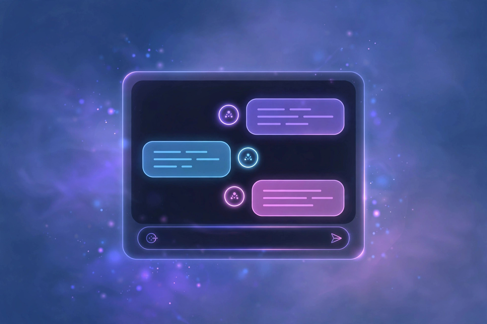

Wsup.ai Review: It's Gone — Here's the Live No-Signup Replacement
If you're reading this, you probably searched for wsup.ai — the anonymous AI character-chat app — and found a dead end. I can confirm it: the original wsup.ai wound down through mid-2026 and shut down completely on June 19, 2026. When I visited the domain in October 2026, it was serving cloud-gaming content, not AI chat. The good news: an independent replacement called WSUP AI now lives at wsupai.app, and I tested it. Character chat really does start with no sign up. This review is about the live replacement — because the original no longer exists to review.
| Verdict | 6.5/10 — the successor works, but it's still young and unproven |
|---|---|
| No sign up? | Yes — guest chat with no account; anonymous auth keeps sessions going |
| Price | Free (first reply and core chat free); credit system for extended use |
| Best for | Casual AI character chat and roleplay with zero friction |
| Watch out for | New service with unproven track record; "anonymous" isn't no-identifiers; credit wallet for power use |

What happened to Wsup.ai?
The original wsup.ai was a browser-first AI character-chat platform — open the site, pick an AI character, start talking, no account. In May 2026 it announced a wind-down: active character chats ended first, then read-only access continued temporarily, and the service closed for good on June 19, 2026. Accounts, purchases, characters, and chat histories did not transfer anywhere — the site says so explicitly. I checked the domain in October 2026 and it's now serving completely unrelated content (cloud-gaming landing pages), so anyone linking to wsup.ai for AI chat is linking to a ghost.
That's the factual part. Everything below is about the replacement, because that's what's actually usable today.
What is WSUP AI (wsupai.app)?
WSUP AI at wsupai.app is an independent, browser-based character-chat platform built explicitly as a successor experience — the site itself states it is not affiliated with the former wsup.ai service or its owners, and nothing carried over. What it offers today: a searchable roster of about 1,850 AI characters across categories like Anime, Companion, K-Wave, Modern, Roleplay, Romance, and Fan/Unofficial, with ranking sections (most popular, best conversation starters, best-rated) so you're not scrolling blind.
The feature list is ambitious for a free service: text conversations with public characters, character-specific voice replies (each character answers out loud in its own voice, not one shared narrator), AI-generated image replies when a scene calls for it, reply regeneration, short cinematic intros for some characters, and an AI-assisted "build your own AI" character creator — all in the browser, no app install required.
The no-signup test
This is the part that matters for TapToAgent's curation standard, so I checked it carefully rather than trusting the homepage headline. The site's terms say visitors can receive their first reply without signing up, and the product describes itself as "no login, no signup — open the site, pick an AI character, and send a message. Free from the first reply onward — no account, no email, no install, and no sign-up wall later."
One important nuance, though: "no signup" does not mean "no identifiers." The platform uses anonymous Firebase authentication to keep guest sessions alive — that's how it continues the right conversation thread with the right character without an account. Guests can later log in and connect eligible history to an account, which also adds retained history, saved characters, and larger image/audio allowances. The privacy policy is upfront that it stores chat messages, generated replies, Firebase identifiers, device data, and analytics events. So: no account needed to chat, yes — but treat it as guest access, not anonymous access. Don't share personal information in chats, same as with any AI service.
Free limits and pricing
Core conversations and character discovery are free as a guest. The platform runs on a freemium credit model: additional interactions and premium features (extended image generation, advanced customization, premium character interactions) draw from a credit wallet that you can top up with purchases or earn daily just by showing up. Reported pricing runs from small credit packs (around $1.99) up to larger ones ($19.99) for power users.
The model is notably non-coercive by the standards of the category: no mandatory account, no expiring-trial pressure, no feature gated behind a forced signup. For casual users, the free allocation covers the actual use case. But I couldn't independently verify exact daily message caps for guests, and credit economics are exactly the kind of thing that changes monthly on young platforms — check the live interface before buying anything, and don't pay for credits on a service that's been live for months unless the free tier proves itself to you first.
Chat quality
Let's be direct: this is a young platform with a smaller character base (~1,850 vs. hundreds of thousands on the biggest roleplay sites), and its models are serviceable rather than frontier-tier. Conversations are coherent and fun for casual roleplay and companionship scenarios — the ranking signals (reply rate, "keeps talking" percentages) actually help you find characters that respond well, which is a smarter discovery system than most no-signup competitors manage.
Where it genuinely differentiates: the multi-character group chat feature (running conversations with multiple AI personalities at once) and character-specific voice replies are things the polished mainstream chatbots don't offer account-free. If you want the absolute best AI roleplay quality and don't mind registering, Perchance remains the deeper free well — unlimited character chat with lighter content filters and years of track record. WSUP AI's bet is immersion: voice, images, cinematics, character-specific everything.
Best for
WSUP AI is for people who want a specific character-chat session right now — no download, no email, no "create account to continue." Open the site, pick a persona, send a message. That ten-second barrier between impulse and conversation is the entire product. It also works for creators: the AI-assisted character builder lets you define a persona and talk to it immediately, which is genuinely useful for testing dialogue or story characters.
It's also a reasonable second option for anyone who found the original wsup.ai too late — the successor is clearly built for that exact audience.
Limitations and catches
- Young service: this is a months-old replacement for a service that itself died. The track record is zero; treat paid credits with caution.
- Guest ≠ anonymous: anonymous auth identifiers, stored messages, device data. Privacy-minded users should know what they're trading.
- Credit wallet: free tier is genuinely usable, but heavy image/voice generation and premium interactions cost credits.
- Smaller library: ~1,850 characters is fine for casual use but thin compared to the giants of the category.
- No account history transfer: nothing survived from the original wsup.ai — don't trust any third party claiming to restore old chats or purchases.
WSUP AI vs the alternatives
Against Perchance: Perchance is the veteran — unlimited, ad-supported, no account system at all, years of history. WSUP AI is prettier and more immersive (voice, image replies, cinematics) but younger, smaller, and monetized through credits rather than ads. For reliability of the free deal, Perchance wins. For the richest free character-chat experience, WSUP AI is worth trying.
Against Character.AI: requires an account and has tightened over time. WSUP AI asks nothing. Model quality still favors the big platforms; friction favors WSUP AI.
FAQ
Is wsup.ai still working?
No. The original wsup.ai wound down in 2026 and closed on June 19. The domain now serves unrelated content. The live replacement is WSUP AI at wsupai.app — an independent service with no affiliation to the original.
Does WSUP AI really require no sign up?
Correct — you can browse characters and start chatting with no account, no email, no install. The site keeps guest sessions alive through anonymous authentication, and signing in is optional (it adds history retention and larger media allowances).
Is WSUP AI free?
Core chat and character discovery are free. Extended image/voice generation and premium features use a credit wallet — purchasable or earned daily by showing up. Casual users should be fine on the free tier.
Did my old wsup.ai account and chats transfer?
No. The replacement states explicitly that accounts, purchases, characters, and conversation histories from the former service did not transfer. Be wary of any third party claiming it can restore them.
Is WSUP AI private?
It's guest access, not anonymous access: the service stores chat messages, Firebase identifiers, and device data per its privacy policy. Don't share personal information in chats.
WSUP AI vs Perchance — which should I use?
Perchance is the safer long-term free pick — unlimited, no account system, proven for years. WSUP AI is the richer experience pick — voice, images, cinematics — with a smaller library and a young track record. Both earned their place in our 12-chatbot no-signup test.
Verdict
Wsup.ai the original is dead; that needed to be said plainly before anything else. WSUP AI the replacement is genuinely usable without signing up, which is rarer in the character-chat category than it should be in 2026 — most of its peers quietly added login walls this year. It's young, it's smaller than the giants, and its privacy story is "guest access," not "private." But for what it promises — a character chat you can start in ten seconds — it delivers.
6.5/10. A solid free experiment from a service that's still earning its track record. Browse the rest of our tested no-signup directory here.
Open wsupai.app — no sign up →
Tested 2026-10-15 · Providers change their signup policies — we re-verify regularly.